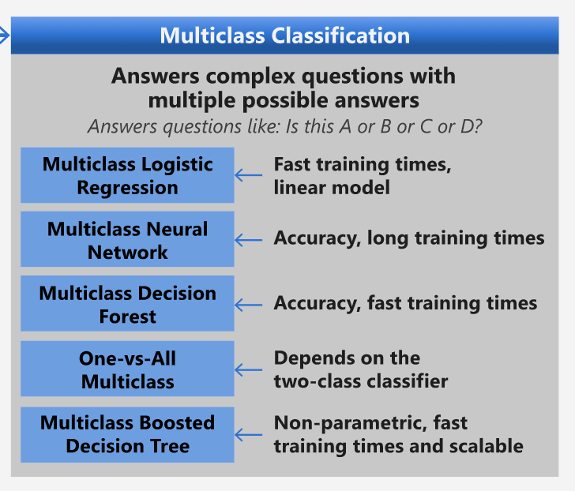
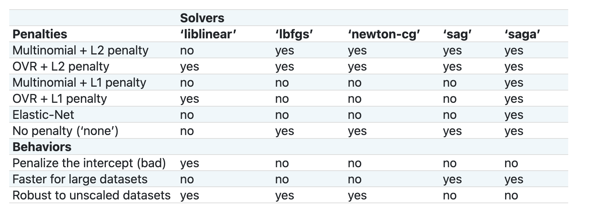

Classifiers 1
Cuisine classifiers 1¶
In this lesson, you will use the dataset you saved from the last lesson full of balanced, clean data all about cuisines.
You will use this dataset with a variety of classifiers to predict a given national cuisine based on a group of ingredients. While doing so, you'll learn more about some of the ways that algorithms can be leveraged for classification tasks.
Pre-lecture quiz¶
Preparation¶
Assuming you completed Lesson 1, make sure that a cleaned_cuisines.csv file exists in the root /data folder for these four lessons.
Exercise - predict a national cuisine¶
-
Working in this lesson's notebook.ipynb folder, import that file along with the Pandas library:
The data looks like this:
| Unnamed: 0 | cuisine | almond | angelica | anise | anise_seed | apple | apple_brandy | apricot | armagnac | ... | whiskey | white_bread | white_wine | whole_grain_wheat_flour | wine | wood | yam | yeast | yogurt | zucchini | |
|---|---|---|---|---|---|---|---|---|---|---|---|---|---|---|---|---|---|---|---|---|---|
| 0 | 0 | indian | 0 | 0 | 0 | 0 | 0 | 0 | 0 | 0 | ... | 0 | 0 | 0 | 0 | 0 | 0 | 0 | 0 | 0 | 0 |
| 1 | 1 | indian | 1 | 0 | 0 | 0 | 0 | 0 | 0 | 0 | ... | 0 | 0 | 0 | 0 | 0 | 0 | 0 | 0 | 0 | 0 |
| 2 | 2 | indian | 0 | 0 | 0 | 0 | 0 | 0 | 0 | 0 | ... | 0 | 0 | 0 | 0 | 0 | 0 | 0 | 0 | 0 | 0 |
| 3 | 3 | indian | 0 | 0 | 0 | 0 | 0 | 0 | 0 | 0 | ... | 0 | 0 | 0 | 0 | 0 | 0 | 0 | 0 | 0 | 0 |
| 4 | 4 | indian | 0 | 0 | 0 | 0 | 0 | 0 | 0 | 0 | ... | 0 | 0 | 0 | 0 | 0 | 0 | 0 | 0 | 1 | 0 |
-
Now, import several more libraries:
-
Divide the X and y coordinates into two dataframes for training.
cuisinecan be the labels dataframe:It will look like this:
-
Drop that
Unnamed: 0column and thecuisinecolumn, callingdrop(). Save the rest of the data as trainable features:cuisines_feature_df = cuisines_df.drop(['Unnamed: 0', 'cuisine'], axis=1) cuisines_feature_df.head()Your features look like this:
| almond | angelica | anise | anise_seed | apple | apple_brandy | apricot | armagnac | artemisia | artichoke | ... | whiskey | white_bread | white_wine | whole_grain_wheat_flour | wine | wood | yam | yeast | yogurt | zucchini | |
|---|---|---|---|---|---|---|---|---|---|---|---|---|---|---|---|---|---|---|---|---|---|
| 0 | 0 | 0 | 0 | 0 | 0 | 0 | 0 | 0 | 0 | 0 | ... | 0 | 0 | 0 | 0 | 0 | 0 | 0 | 0 | 0 | 0 |
| 1 | 1 | 0 | 0 | 0 | 0 | 0 | 0 | 0 | 0 | 0 | ... | 0 | 0 | 0 | 0 | 0 | 0 | 0 | 0 | 0 | 0 |
| 2 | 0 | 0 | 0 | 0 | 0 | 0 | 0 | 0 | 0 | 0 | ... | 0 | 0 | 0 | 0 | 0 | 0 | 0 | 0 | 0 | 0 |
| 3 | 0 | 0 | 0 | 0 | 0 | 0 | 0 | 0 | 0 | 0 | ... | 0 | 0 | 0 | 0 | 0 | 0 | 0 | 0 | 0 | 0 |
| 4 | 0 | 0 | 0 | 0 | 0 | 0 | 0 | 0 | 0 | 0 | ... | 0 | 0 | 0 | 0 | 0 | 0 | 0 | 0 | 1 | 0 |
Now you are ready to train your model!
Choosing your classifier¶
Now that your data is clean and ready for training, you have to decide which algorithm to use for the job.
Scikit-learn groups classification under Supervised Learning, and in that category you will find many ways to classify. The variety is quite bewildering at first sight. The following methods all include classification techniques:
- Linear Models
- Support Vector Machines
- Stochastic Gradient Descent
- Nearest Neighbors
- Gaussian Processes
- Decision Trees
- Ensemble methods (voting Classifier)
- Multiclass and multioutput algorithms (multiclass and multilabel classification, multiclass-multioutput classification)
You can also use neural networks to classify data, but that is outside the scope of this lesson.
What classifier to go with?¶
So, which classifier should you choose? Often, running through several and looking for a good result is a way to test. Scikit-learn offers a side-by-side comparison on a created dataset, comparing KNeighbors, SVC two ways, GaussianProcessClassifier, DecisionTreeClassifier, RandomForestClassifier, MLPClassifier, AdaBoostClassifier, GaussianNB and QuadraticDiscrinationAnalysis, showing the results visualized:

Plots generated on Scikit-learn's documentation
AutoML solves this problem neatly by running these comparisons in the cloud, allowing you to choose the best algorithm for your data. Try it here
A better approach¶
A better way than wildly guessing, however, is to follow the ideas on this downloadable ML Cheat sheet. Here, we discover that, for our multiclass problem, we have some choices:

A section of Microsoft's Algorithm Cheat Sheet, detailing multiclass classification options
✅ Download this cheat sheet, print it out, and hang it on your wall!
Reasoning¶
Let's see if we can reason our way through different approaches given the constraints we have:
- Neural networks are too heavy. Given our clean, but minimal dataset, and the fact that we are running training locally via notebooks, neural networks are too heavyweight for this task.
- No two-class classifier. We do not use a two-class classifier, so that rules out one-vs-all.
- Decision tree or logistic regression could work. A decision tree might work, or logistic regression for multiclass data.
- Multiclass Boosted Decision Trees solve a different problem. The multiclass boosted decision tree is most suitable for nonparametric tasks, e.g. tasks designed to build rankings, so it is not useful for us.
Using Scikit-learn¶
We will be using Scikit-learn to analyze our data. However, there are many ways to use logistic regression in Scikit-learn. Take a look at the parameters to pass.
Essentially there are two important parameters - multi_class and solver - that we need to specify, when we ask Scikit-learn to perform a logistic regression. The multi_class value applies a certain behavior. The value of the solver is what algorithm to use. Not all solvers can be paired with all multi_class values.
According to the docs, in the multiclass case, the training algorithm:
- Uses the one-vs-rest (OvR) scheme, if the
multi_classoption is set toovr - Uses the cross-entropy loss, if the
multi_classoption is set tomultinomial. (Currently themultinomialoption is supported only by the ‘lbfgs’, ‘sag’, ‘saga’ and ‘newton-cg’ solvers.)"
🎓 The 'scheme' here can either be 'ovr' (one-vs-rest) or 'multinomial'. Since logistic regression is really designed to support binary classification, these schemes allow it to better handle multiclass classification tasks. source
🎓 The 'solver' is defined as "the algorithm to use in the optimization problem". source.
Scikit-learn offers this table to explain how solvers handle different challenges presented by different kinds of data structures:

Exercise - split the data¶
We can focus on logistic regression for our first training trial since you recently learned about the latter in a previous lesson.
Split your data into training and testing groups by calling train_test_split():
X_train, X_test, y_train, y_test = train_test_split(cuisines_feature_df, cuisines_label_df, test_size=0.3)
Exercise - apply logistic regression¶
Since you are using the multiclass case, you need to choose what scheme to use and what solver to set. Use LogisticRegression with a multiclass setting and the liblinear solver to train.
-
Create a logistic regression with multi_class set to
ovrand the solver set toliblinear:lr = LogisticRegression(multi_class='ovr',solver='liblinear') model = lr.fit(X_train, np.ravel(y_train)) accuracy = model.score(X_test, y_test) print ("Accuracy is {}".format(accuracy))✅ Try a different solver like
lbfgs, which is often set as defaultNote, use Pandas
ravelfunction to flatten your data when needed.The accuracy is good at over 80%!
-
You can see this model in action by testing one row of data (#50):
print(f'ingredients: {X_test.iloc[50][X_test.iloc[50]!=0].keys()}') print(f'cuisine: {y_test.iloc[50]}')The result is printed:
ingredients: Index(['cilantro', 'onion', 'pea', 'potato', 'tomato', 'vegetable_oil'], dtype='object')
cuisine: indian
✅ Try a different row number and check the results
-
Digging deeper, you can check for the accuracy of this prediction:
test= X_test.iloc[50].values.reshape(-1, 1).T proba = model.predict_proba(test) classes = model.classes_ resultdf = pd.DataFrame(data=proba, columns=classes) topPrediction = resultdf.T.sort_values(by=[0], ascending = [False]) topPrediction.head()The result is printed - Indian cuisine is its best guess, with good probability:
0 indian 0.715851 chinese 0.229475 japanese 0.029763 korean 0.017277 thai 0.007634 ✅ Can you explain why the model is pretty sure this is an Indian cuisine?
-
Get more detail by printing a classification report, as you did in the regression lessons:
precision recall f1-score support chinese 0.73 0.71 0.72 229 indian 0.91 0.93 0.92 254 japanese 0.70 0.75 0.72 220 korean 0.86 0.76 0.81 242 thai 0.79 0.85 0.82 254 accuracy 0.80 1199 macro avg 0.80 0.80 0.80 1199 weighted avg 0.80 0.80 0.80 1199
🚀Challenge¶
In this lesson, you used your cleaned data to build a machine learning model that can predict a national cuisine based on a series of ingredients. Take some time to read through the many options Scikit-learn provides to classify data. Dig deeper into the concept of 'solver' to understand what goes on behind the scenes.
Post-lecture quiz¶
Review & Self Study¶
Dig a little more into the math behind logistic regression in this lesson